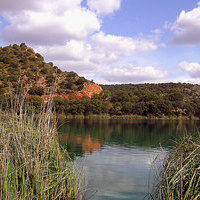
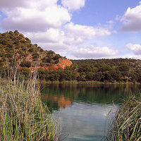

Río Mundo
 

Si vas en coche, éste se aparca en la explanada de los chorros (después de aguantar la cola de una hora en fines de semana y puentes. Cupo de coches: 100), y se sube por el sendero marcado hasta las pasarelas desde las que se ve la cascada. No presenta grandes dificultades, salvo que es de subida, pero puede hacerla cualquier persona.
Para llegar a la explanada, desde Riópar se debe coger la carretera dirección a Siles y a unos 6 kms. aproximadamente, encontramos el desvío hacia el nacimiento y a poco más de 2 kms. termina la carretera. En la última curva de la carretera, que baja a la explanada, sale además un camino para personas con movilidad reducida que también llega a la cascada a pie llano. Hasta aquí, la ruta no presenta dificultad, y el acceso es libre.
Hay un cupo de coches máximo simultáneo en la explanada de los chorros de 100 coches y 6 autobuses. Esta prohibido aparcar a lo largo de la carretera de acceso. Solamente se puede aparcar en la explanada. A parte hay disponible un aparcamiento en el Puerto del Arenal, en la carretera a Siles, desde el que se puede bajar andando por senda señalizada. Está prohibido salirse de las sendas señalizadas para ir a la cascada y a los miradores.
Las personas que traen su comida, bocadillos, picnic, etc. para comer en la zona, deben de utilizar la zona habilitada para ello que se encuentra fuera de Los Chorros, a unos 3 Km, para facilitar la entrada a los vehículos que están en espera.